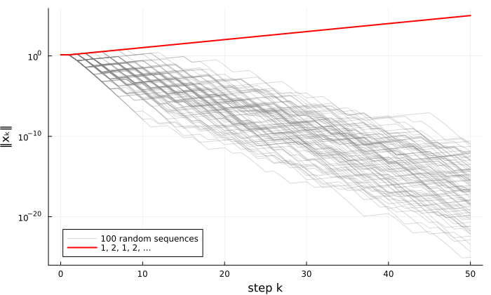
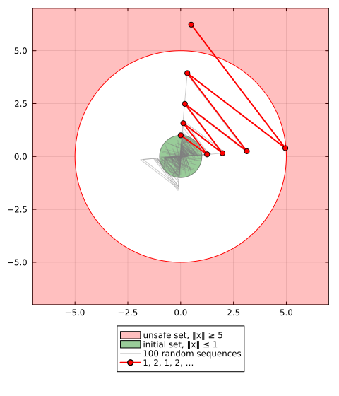
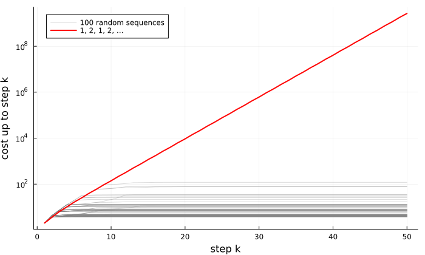

Systems and problems
Part I of the manual follows one running example from start to end. This page defines switched linear systems and the three problems the package certifies, and shows why simulations cannot answer them. The next page certifies the three problems on the running example; the pages after it choose the template and the graph for stability, and read the three certificates.
Switched linear systems
The state $x_k \in \mathbb{R}^n$ evolves in discrete time, and at each step the mode $\sigma(k) \in \{1, \dots, M\}$ selects the dynamics.
Autonomous systems
\[x_{k+1} = A_{\sigma(k)} x_k,\]
with one matrix $A_i \in \mathbb{R}^{n \times n}$ per mode. switched_system builds the system from its matrices:
import PathCompleteCertificates as PCC
A1 = [0.1552 0.0447; 0.7641 0.7472]
A2 = [0.0475 0.9176; 0.1896 0.0185]
system = PCC.switched_system([A1, A2])
PCC.n_modes(system), PCC.has_input(system)(2, false)Controlled systems
\[x_{k+1} = A_{\sigma(k)} x_k + B_{\sigma(k)} u_k,\]
with, in addition, one matrix $B_i \in \mathbb{R}^{n \times m}$ per mode and the input $u_k \in \mathbb{R}^m$. switched_system takes the $B_i$ as a second argument:
B1 = [1.0; 0.0;;]
B2 = [1.0; 0.0;;]
controlled = PCC.switched_system([A1, A2], [B1, B2])
PCC.n_modes(controlled), PCC.has_input(controlled)(2, true)state_matrices and input_matrices return the matrices.
Arbitrary switching
The modes $\sigma(0), \sigma(1), \dots$ are not chosen by you: any sequence may occur, and a certificate must hold for all of them. In a controlled system, the controller chooses the input, not the mode. Switching restricted by an automaton is planned: see issue #45.
Simulating a run
simulate runs a system from an initial state along a sequence of modes, or along random modes when given a number of steps, and returns a Trajectory. Here the system runs from $x_0 = (1, 1)$ along the modes $1, 2, 2, 1$, and states returns the state trajectory, $x_0$ to $x_4$:
trajectory = PCC.simulate(system, [1.0, 1.0], [1, 2, 2, 1])
PCC.states(trajectory)5-element Vector{Vector{Float64}}:
[1.0, 1.0]
[0.1999, 1.5112999999999999]
[1.3962641299999998, 0.06586009]
[0.126755764759, 0.2659500907129999]
[0.03156046374546789, 0.29557198763310544]A controlled system also needs its inputs, as a vector of inputs or as a feedback law u(x), here $u(x) = -0.5 x_1$:
trajectory = PCC.simulate(controlled, [1.0, 1.0], [1, 2, 2, 1]; u = x -> [-0.5 * x[1]])
PCC.states(trajectory)5-element Vector{Vector{Float64}}:
[1.0, 1.0]
[-0.30010000000000003, 1.5112999999999999]
[1.52256413, -0.02893991000000001]
[-0.715515530241, 0.288142770713]
[0.2595897366779679, -0.33142513838039456]switching and inputs return the modes and the inputs of a trajectory. With Plots loaded, plot(trajectory) draws it.
A run shows one behavior of the system and proves nothing about the others, as the next section shows.
What can be certified
Each of the three properties is a problem, built from the system. Simulations cannot prove any of them, and a figure for each problem shows why, on a small system that is fragile under switching:
M1 = [0.1 1.25; 0.0 0.1]
M2 = [0.1 0.0; 1.25 0.1]
fragile = PCC.switched_system([M1, M2])Each mode alone is stable, with spectral radius $0.1$, but alternating the two makes the state grow by about $1.26$ per step, the square root of the spectral radius of $M_1 M_2$. Random sequences rarely alternate for long, so simulations miss it: of the $2^{50}$ sequences of 50 modes, they try a few. A certificate holds for all of them.
Stability
The joint spectral radius of the matrices,
\[\rho = \lim_{k \to \infty} \max_{i_1, \dots, i_k} \| A_{i_k} \cdots A_{i_1} \|^{1/k},\]
is the worst asymptotic growth rate of the trajectories. An autonomous system is asymptotically stable under arbitrary switching exactly when $\rho < 1$. A stability certificate gives an upper bound on $\rho$.
On the fragile system, every random run shrinks, yet the alternating sequence grows without bound: $\rho \ge 1.26$.

For the running example:
stability = PCC.StabilityProblem(system)A complete example: Bound the joint spectral radius of my system.
Safety
Given an initial set and an unsafe set, a safety certificate proves that no trajectory of an autonomous system starting in the first ever reaches the second, whatever the switching.
On the fragile system, with the initial set $\|x\| \le 1$ and the unsafe set $\|x\| \ge 5$, every random run stays safe, yet the alternating sequence from $(0, 1)$ reaches the unsafe set in eight steps.

For the running example, with the same sets, given in homogeneous coordinates as $\{x : [x; 1]^\top S [x; 1] \ge 0\}$:
S0 = [-1.0 0.0 0.0; 0.0 -1.0 0.0; 0.0 0.0 1.0]
Su = [1.0 0.0 0.0; 0.0 1.0 0.0; 0.0 0.0 -25.0]
safety = PCC.SafetyProblem(system, S0, Su)A complete example: Prove my system safe.
Optimal control
Given a controlled system and the stage cost $x_k^\top Q x_k + u_k^\top R u_k$, with $Q$ and $R$ positive definite, an optimal control certificate gives a state-feedback policy $u_k = \phi(x_k)$, a function of the state only, and an upper bound on its total cost $\sum_{k \ge 0} x_k^\top Q x_k + u_k^\top R u_k$ from each initial state, for every switching sequence.
On the fragile system with the input matrix $B = (-0.6, 0.8)$ in both modes, and $Q = I$, $R = 1$, take the policy $u = K x$, with $K$ the gain of the linear-quadratic regulator designed for mode 1. The closed loop of each mode is stable, and every random run has a small cost, yet along the alternating sequence the closed loop grows by about $1.23$ per step, and the cost grows without bound.

For the running example:
Q = [1.0 0.0; 0.0 1.0]
R = [1.0;;]
control = PCC.OptimalControlProblem(controlled, Q, R)A complete example: Design a controller robust to switching.